01 — DEFINITION
EQは「感情をコントロールする力」 ではありません。
よくある誤解Brifuの定義
感情をコントロールする力
EQ（Emotional Intelligence）は、「感情をコントロールする力」だと思われがちです。私たちの定義は少し違います。感情を、認識を、行動を、自分と相手の可能性を活かすために使う力。それがEQです。
自分の感情に気づき、認識を見直し、目的から選び、行動する。相手の感情に目を向け、認識の違いを確かめ、本音で対話する。この往復が、自分にも相手にも「可能性」を残します。

SELF
自己理解
感情・価値観・認識を知る

EXPRESS
感情の言語化
自分の状態を言葉にする
OTHERS
他者理解・対話
相手の認識に関心を向ける

ACTION
意思決定・行動
目的から選び、振り返る
02 — WHY THE HEART
社会を変える前に、 変化が起きる場所がある。
それは、技術でも、制度でも、仕組みでもなく、人の心。
心が変わると、
- 01考え方が変わる
- 02感じ方が変わる
- 03選択が変わる
- 04行動が変わる
- 05人との関係が変わる
だからBrifuは、「人の心」にイノベーションを起こします。
03 — EQ RECOGNITION THEORY
EQ認識理論 人は「認識した世界」の中で 行動する。
感情が認識をつくり、認識が選択を決め、選択が行動になり、行動が結果を生む。その結果を振り返ることで、認識が更新される。私たちは、この循環そのものを変えていきます。
- 感情最初に動くのは、いつも感情
- 認識感情が「世界の見え方」をつくる
- 選択見えている世界の中から選ぶ
- 行動選択が、行動として表れる
- 結果行動が、現実をつくる
- 振り返り結果を、感情と認識から見直す
- 認識の更新世界の見え方が、変わる
更新された認識が、次の感情・選択・行動を変えていきます。
人は認識によって行動する。
— EQ認識理論
認識を整え、感情を力に変え、
豊かな人生と社会を創る。
04 — WHY BRIFU
Brifu独自のメソッドだから、 人と組織が変わる。
-
01
現場から生まれた理論
延べ2,000人以上の人材育成・コンサルティング、1万人以上の人の心との向き合い、数千人規模の組織づくり。その現場で「なぜ、人は変われないのか」と問い続け、代表・波多野輝未が体系化しました。
- 人材育成・コンサルティング
- 2,000人以上
- 向き合ってきた人の心
- 10,000人以上
-
02
「スキル」の前に、「認識」から変える
知識やスキルを身につける横成長だけでなく、物事の見え方そのものが変わる縦成長を扱います。見え方が変わると、同じスキルでも、使ったときの質が変わります。
-
03
学ぶ・高める・育てる・活かすを、ひとつの理論で
EQ Platformの4つの事業（EQ Academy／EQ Humanity／EQTM／EQ Business Nexus）は、すべてEQ認識理論を土台にしています。認識を言葉にする道具「EQコアカード®」も、代表自らが開発しました。
- 理論を土台にした事業
- 4事業
05 — TWO WAYS TO GROW
スキルを身につける「横成長」と、 認識が成熟する「縦成長」。
横成長EQ Skills（知識・スキル）
縦成長EIA（認識の成熟）
HORIZONTAL GROWTH
横成長EQ Skills
感情リテラシー、コミュニケーション、自己理解・他者理解など、EQの知識とスキルを身につける成長です。

VERTICAL GROWTH
縦成長EIA
自分の認識を自覚し、更新していく成長です。物事の見え方そのものが変わり、同じ場面で別の選び方ができるようになります。
たとえば
面談のスキルを学んでも、部下が本音を話さないとき
傾聴や質問の技術を身につけても、内側に「部下は導くべき存在だ」という認識があると、言葉の端々に評価する側の空気がにじみ、部下は安心できません。「部下は、可能性を持ったひとりの人だ」と見方が変わったとき、同じスキルでも面談の質が大きく変わります。スキル（横成長）は、認識の成熟（縦成長）に支えられて、はじめて本当に機能します。
06 — RIPPLE
一人の変化が、 人・チーム・組織・社会へ広がっていく。
自分から始まり、人へ、チームへ、組織へ、社会へ。一つの変化が、次の変化を生みます。
-
01 — SELF
自分
自分の心が分かる。
自分で、自分の一歩を選べる。
-

02 — RELATIONSHIP
人との関係
相手の心にも、目を向けられる。
すれ違いを減らし、本音で対話できる。
-
03 — TEAM
チーム
一人ひとりの可能性を活かせる。
人が活きるチームへ。
-
04 — ORGANIZATION
組織
人の成長と、組織の目的がつながる。
理念が、人の行動に表れる組織へ。
-

05 — SOCIETY
社会
一人の変化が、次の人へ伝わる。
「お互いを大切にする社会」をつくる。


講座・研修・法人向け支援・ 商品について、 お気軽にご相談ください。
ご相談内容がまだ整理できていなくても大丈夫です。いまの状況をお聞きするところから始めます。
- EQ Academy・EQTMなどの講座について
- 法人向けの研修・組織づくりのご相談
- EQコアカード・書籍のご購入について
メール：info@brifu.co.jp